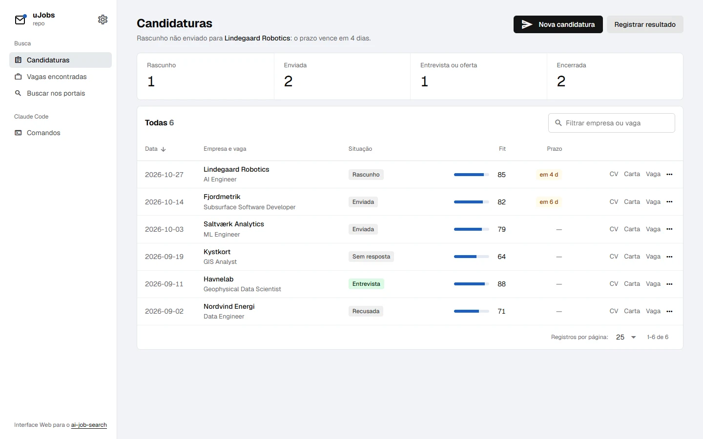
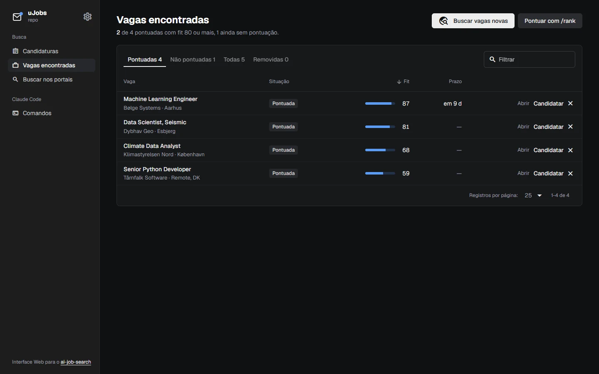
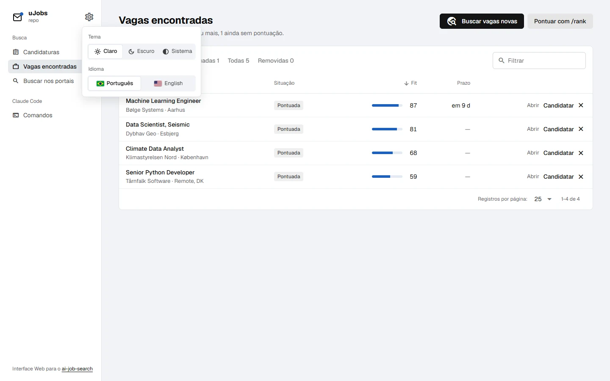
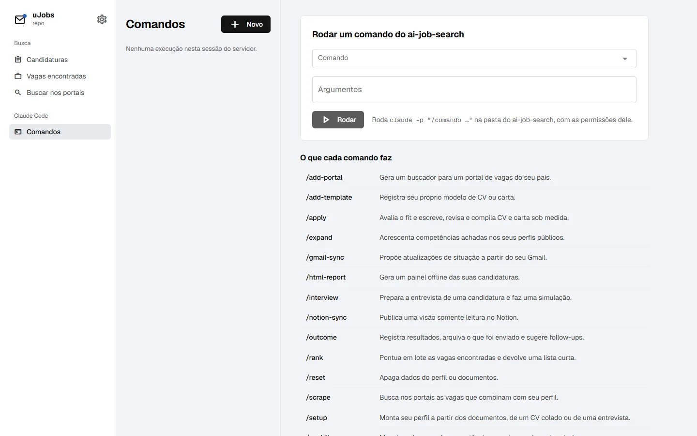

uJobs
Interface web para o ai-job-search: candidaturas, vagas encontradas e comandos do Claude Code numa página local, num único binário Go.A web interface for ai-job-search: applications, found jobs and Claude Code commands in one local page, in a single Go binary.

 0
0

O que fazWhat it does
- Candidaturas: cada linha do
job_search_tracker.csv, com quantas estão em cada etapa, o fit em barra e prazos da semana em destaque. - Applications: every row of
job_search_tracker.csv, with how many sit in each stage, the fit as a bar and deadlines a week out highlighted. - Vagas encontradas: o histórico do
/scrapee do/rank, com um botão Candidatar que roda o/apply. - Found jobs: the
/scrapeand/rankhistory, with an Apply button that runs/apply. - Remover do painel esconde a vaga sem apagar, e dá para desfazer ou restaurar depois.
- Remove from panel hides a job without deleting it, and you can undo or restore it later.
- Comandos: roda qualquer comando do ai-job-search com
claude -pe deixa você responder às perguntas do Claude na mesma sessão. - Commands: runs any ai-job-search command with
claude -pand lets you answer Claude's questions in the same session. - Tema claro, escuro ou do sistema e português ou inglês, lembrados no navegador.
- Light, dark or system theme and Portuguese or English, remembered in the browser.
- Três backends, uma API:
--router gin,echoouchi, com a mesma suíte de testes rodando contra os três. - Three backends, one API:
--router gin,echoorchi, with the same test suite running against all three.
Como funcionaHow it works
Um único binário Go com o frontend em Vue e Quasar embutido. Toda a lógica fica em internal/core, que não conhece nenhum framework HTTP; Gin, Echo e Chi são três adaptadores finos que ligam as mesmas rotas a ele, escolhidos na hora de iniciar. Os dados vêm dos arquivos que o ai-job-search escreve, e buscas e comandos rodam as ferramentas dele, na pasta dele.A single Go binary with the Vue and Quasar frontend embedded. All the logic lives in internal/core, which knows no HTTP framework; Gin, Echo and Chi are three thin adapters wiring the same routes to it, picked at startup. Data comes from the files ai-job-search writes, and searches and commands run its own tools, in its own folder.
127.0.0.1, recusa requisições de outros hosts (DNS rebinding) e só roda comandos que existem na pasta do ai-job-search.Only on your machine. It listens on 127.0.0.1, refuses requests from other hosts (DNS rebinding) and only runs commands that exist in the ai-job-search folder.Como rodarRun it
git clone https://github.com/SamuelSchutz13/uJobsGUI.git cd uJobsGUI/web && npm install && npm run build && cd .. go build -o ujobs . ./ujobs --root /caminho/para/ai-job-search
ImagensImages


